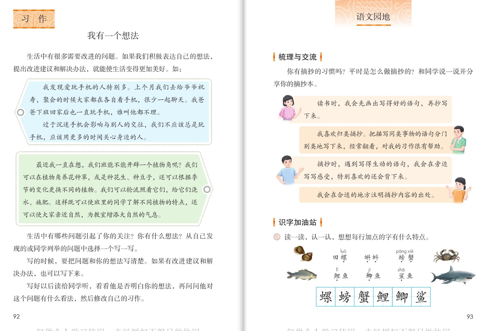
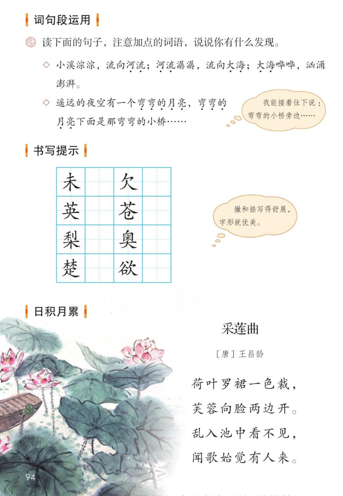

×
🔊 手机听不到声音怎么办？
① 先把手机
媒体音量调大 ，确认没开静音、没连蓝牙耳机；在微信里打开的，点右上角「⋯ → 用浏览器打开」。
② 还是没声音？到应用商店免费下载
Microsoft Edge 浏览器 （它自带朗读发声），用它打开本页面就能出声。
③ 换了 Edge 仍然没声音，说明这部手机的
硬件/系统不支持 网页朗读（多为老旧机型）；近几年买的新手机一般都能正常播放。
→ 打开声音自检
🧭 语文园地七 · 有声图文学习页
统编版语文 · 第七单元 · 课本 P93~94 · 素养升级版（对标 2022 课标第二学段）
板块内容 9 段
素养目标 4
会认字 6 · 会写 6
听写词 12
近义词 4 组
深入理解 8 题
日积月累 《采莲曲》
🎧 语文园地这样学（可随时点任意一句、一个词单独听）： ① 听读板块内容 ——梳理与交流、识字加油站、词句段运用、书写提示、日积月累，逐句点读。② 学字词 ——虫字旁、鱼字旁的水族朋友（螺螃蟹鲤鲫鲨），点一个读一个。③ 词语·听写 ——听写 12 个本单元好词。④ 深入理解 ——8 道题，把摘抄方法和小妙招理清楚。⑤ 分角色示范 ——摘抄分享员、识字小老师、句子发现员、书写提示员、诗朗诵员。🌟 本单元阅读要素：感受课文生动的语言，积累喜欢的语句——摘抄就是最好的积累方法。
📌 本单元语文要素——阅读：感受课文生动的语言，积累喜欢的语句；习作：留心生活，把自己的想法记录下来。
🀄 文化自信
🀄 文化自信
日积月累诵读《采莲曲》，感受王昌龄笔下采莲少女与荷花相映的江南之美。
🗣 语言运用
🗣 语言运用
交流摘抄的方法；认识虫字旁、鱼字旁的生字；发现并照样子说顶针式的句子。
💡 思维能力
💡 思维能力
梳理摘抄的好方法：画一画、抄下来、分类抄、写感受、注出处。
🎨 审美创造
🎨 审美创造
读句子想画面：小溪淙淙流向大海，弯弯的月亮下有弯弯的小桥——声音和形状都在句子里。
点段前的 ①②③ 听整段
🔁 跟读模式：关
👁 隐藏注音（自测用）
词语卡上的拼音标的是易错音，读音供参考
🎤 学习要求（教材标准） 梳理与交流 ：你有摘抄的习惯吗？说一说并分享摘抄本；识字加油站 ：读一读、认一认，想想每行加点的字有什么特点；词句段运用 ：读句子，注意加点的词语，说说发现；书写提示 ：撇和捺写得舒展，字形就优美；日积月累 ：诵读、背诵《采莲曲》。
💡 园地学习小提示（五步走） 晒摘抄本 ——说说你的摘抄方法；第二步 认生字 ——虫字旁、鱼字旁的水族朋友；第三步 读句子 ——发现加点词语的特点，接着往下说；第四步 练书写 ——撇和捺写得舒展；第五步 背古诗 ——《采莲曲》。单元收获整理课 ——把三篇课文的本领都装进自己口袋。
①
你有摘抄的习惯吗？平时是怎么做摘抄的？和同学说一说并分享你的摘抄本。
📌 这一段讲：梳理与交流：你有摘抄的习惯吗？平时怎么做？和同学说一说并分享摘抄本。
②
读书时，我会先画出写得好的语句，再抄写下来。
📌 这一段讲：教材气泡一（照录）：读书时先画出写得好的语句，再抄写下来。
③
我喜欢分类摘抄。
把描写同类事物的语句分门别类地写下来，经常翻看，对我的习作很有帮助。
📌 这一段讲：教材气泡二（照录）：分类摘抄——描写同类事物的语句分门别类写下来，经常翻看。
④
摘抄时，遇到写得生动的语句，我会在旁边写写感受，特别喜欢的还会背下来。
📌 这一段讲：教材气泡三（照录）：遇到生动的语句写写感受，特别喜欢的背下来。
⑤
我会在合适的地方注明摘抄内容的出处。
📌 这一段讲：教材气泡四（照录）：在合适的地方注明摘抄内容的出处。
⑥
读一读，认一认，想想每行加点的字有什么特点。
田螺、蝌蚪、螃蟹。
鲤鱼、鲫鱼、鲨鱼。
📌 这一段讲：识字加油站（照录）：田螺 蝌蚪 螃蟹（虫字旁）/ 鲤鱼 鲫鱼 鲨鱼（鱼字旁）——加点的字都和虫类、鱼类有关。
⑦
读下面的句子，注意加点的词语，说说你有什么发现。
小溪淙淙，流向河流；河流潺潺，流向大海；大海哗哗，汹涌澎湃。
遥远的夜空有一个弯弯的月亮，弯弯的月亮下面是那弯弯的小桥……
我能接着往下说：弯弯的小桥旁边……
📌 这一段讲：词句段运用（照录）：小溪淙淙……大海哗哗汹涌澎湃 / 弯弯的月亮……弯弯的小桥——前一句的结尾是后一句的开头。
⑧
未、欠、英、苍，梨、奥、楚、欲。
撇和捺写得舒展，字形就优美。
📌 这一段讲：书写提示（照录）：未 欠 英 苍 / 梨 奥 楚 欲——撇和捺写得舒展，字形就优美。
⑨
采莲曲，〔唐〕王昌龄。
荷叶罗裙一色裁，
芙蓉向脸两边开。
乱入池中看不见，
闻歌始觉有人来。
📌 这一段讲：日积月累《采莲曲》（照录）：〔唐〕王昌龄——荷叶罗裙一色裁，芙蓉向脸两边开。乱入池中看不见，闻歌始觉有人来。
🤔 想一想（点我可跳过）

第 92~93 页 · 习作 · 语文园地七（双页）

第 94 页 · 词句段运用 · 书写提示 · 日积月累
📖 人教版《语文》三年级上册 · 课本第 93、94 页 · 图片仅供个人学习，版权归人民教育出版社所有
点一张卡，听读音和词语（提示为通用规范，供参考）
结构、部首与书写提示为通用规范，供参考，以教材和老师的指导为准
螺luó
田螺
左右 · 虫 · 17画
虫字旁写窄，右边的累字上下紧凑，田字写扁，绞丝和撇捺要匀称。
螃páng
螃蟹
左右 · 虫 · 16画
虫字旁写窄长，右边的旁字点横居中，方字横折钩要有力。
蟹xiè
螃蟹
上下 · 虫 · 19画
上面的解字左右紧凑，下面的虫字写扁托住上部，竖画正中。
鲤lǐ
鲤鱼
左右 · 鱼 · 15画
鱼字旁横画变成提，右边的里字横画间距均匀，竖画正中。
鲫jì
鲫鱼
左右 · 鱼 · 15画
鱼字旁写窄，右边既是上下结构，撇和竖弯钩要舒展。
鲨shā
鲨鱼
上下 · 鱼 · 18画
上面的沙字写紧凑，三点水呈弧形，下面的鱼字横画间距均匀，托住上部。
点一行，听读这一组词语
螺 田螺 螺蛳 海螺
蟹 螃蟹 蟹黄 湖蟹
鲤 鲤鱼 锦鲤 鲤跃龙门
鲨 鲨鱼 鲨群 鲸鲨
读两遍 → 你在纸上写 → 报答案 → 听示范句
准备听写 · 共 12 个词
○ ○ ○
点下面的「开始听写」，听到一个词就写一个词。
▶ 开始听写
🔁 再读一遍
👁 看答案
点词听读，点句子听示范句，再自己说一句
1 摘抄 积累词
示范句：你有摘抄的习惯吗？
✏️ 我也能说：谁的习惯。
2 习惯 积累词
示范句：你有摘抄的习惯吗？
✏️ 我也能说：你有没有什么。
3 画出 积累词
示范句：读书时，我会先画出写得好的语句。
✏️ 我也能说：先做什么。
4 抄写 积累词
示范句：再抄写下来。
✏️ 我也能说：然后做什么。
5 分类 积累词
示范句：我喜欢分类摘抄。
✏️ 我也能说：怎样摘抄。
6 同类 积累词
示范句：把描写同类事物的语句分门别类地写下来。
✏️ 我也能说：描写什么事物的语句。
7 翻看 积累词
示范句：经常翻看，对我的习作很有帮助。
✏️ 我也能说：经常做什么。
8 感受 积累词
示范句：我会在旁边写写感受。
✏️ 我也能说：在旁边写什么。
9 出处 积累词
示范句：我会在合适的地方注明摘抄内容的出处。
✏️ 我也能说：注明什么。
10 田螺 积累词
示范句：田螺、蝌蚪、螃蟹都是虫字旁的字。
✏️ 我也能说：蝌蚪、螃蟹和什么都是虫字旁。
11 鲤鱼 积累词
示范句：鲤鱼、鲫鱼、鲨鱼都是鱼字旁的字。
✏️ 我也能说：鲫鱼、鲨鱼和什么都是鱼字旁。
12 鲨鱼 积累词
示范句：鲨鱼生活在海洋里。
✏️ 我也能说：谁生活在海洋里。
相同点 / 不一样在哪 / 各造一句
画出 — 圈出
相同：都表示在书上做记号。
不一样：画出 偏重用线把语句标出来；圈出 偏重用圈把字词围起来。
画出：我会先画出写得好的语句。
抄写 — 摘录
相同：都表示把文字移到本子上。
不一样：抄写 偏重照着原样写；摘录 偏重选取需要的部分记下来。
抄写：把好词好句抄写下来。
分门别类 — 分类
相同：都表示按类别归置。
不一样：分门别类 是四字词语，强调类分得细、门分得清；分类 更常用、更口语。
分门别类：把描写同类事物的语句分门别类地写下来。
注明 — 写明
相同：都表示把信息写清楚。
不一样：注明 偏重加上标注说明；写明 偏重把内容写得明确。
注明：我会在合适的地方注明摘抄内容的出处。
摘抄四步 先画出来 再抄下来 写写感受 注明出处
虫字旁的字 螺 蝌蚪 螃蟹——虫类小动物
鱼字旁的字 鲤 鲫 鲨——鱼类
顶针小妙句 河流潺潺——河流又开头 / 弯弯的月亮——月亮又开头
点一张卡，听读这一条
这一单元学的是积累喜欢的语句 ——摘抄就是最好的积累法。教材的四个气泡，把摘抄的好习惯讲得明明白白。
🖍 气泡一·先画后抄
读书时，我会先画出写得好的语句，再抄写下来——画是挑，抄是记。
🗂 气泡二·分类摘抄
把描写同类事物的语句分门别类地写下来，经常翻看，对我的习作很有帮助——比如写景一页、写人一页。
💭 气泡三·写写感受
遇到写得生动的语句，在旁边写写感受，特别喜欢的还会背下来——抄过又想过，才是真积累。
🏷 气泡四·注明出处
在合适的地方注明摘抄内容的出处——书名、课文都写上，以后好找。
🔗 顶针像接龙
小溪淙淙……河流潺潺……大海哗哗——前一句的结尾是后一句的开头，像词语接龙，读起来又顺又好听。
🪷 日积月累·采莲曲
荷叶罗裙一色裁，芙蓉向脸两边开——王昌龄笔下的采莲姑娘，人和荷花融成一幅画。
标「答案不唯一」的题，说得有道理都对
认知 梳理与交流要我们做什么？看解析
🤔 想一想
解析：
说说你有没有摘抄的习惯、平时是怎么做摘抄的，和同学分享你的摘抄本。
🌈 答案不唯一，说得有道理都对
认知 识字加油站的两行字各有什么特点？看解析
🤔 想一想
解析：
第一行田螺、蝌蚪、螃蟹——加点的字都带虫字旁，和虫类有关；第二行鲤鱼、鲫鱼、鲨鱼——加点的字都带鱼字旁，和鱼类有关。
🌈 答案不唯一，说得有道理都对
理解 四个气泡里的摘抄方法，你学到了哪几条？结合自己的摘抄本说一说。看解析
🤔 想一想
解析：
四条方法：先画出写得好的语句再抄写；分类摘抄、经常翻看；旁边写写感受、特别喜欢的背下来；注明出处。🌈 结合自己的摘抄本说，说出你用过的哪一条。
🌈 答案不唯一，说得有道理都对
理解 小溪淙淙……大海哗哗和弯弯的月亮这两组句子，加点词语有什么共同的秘密？看解析
🤔 想一想
解析：
前一句的结尾是后一句的开头：河流——河流，大海——大海，弯弯的月亮——弯弯的月亮，像接龙一样首尾相连，读起来特别顺口。🌈 答案不唯一。
🌈 答案不唯一，说得有道理都对
理解 你能接着往下说吗？弯弯的小桥旁边……看解析
🤔 想一想
解析：
示范：弯弯的小桥旁边有一条弯弯的小船，弯弯的小船旁边是那弯弯的河岸……🌈 答案不唯一，接着顶针的规律说下去就行。
🌈 答案不唯一，说得有道理都对
运用 用书上的方法改一改你的摘抄本，说说你打算怎么做。看解析
🤔 想一想
解析：
示范：把写景的句子归到一页，写人的归到一页；每条注明出自哪篇课文；最喜欢的两句在旁边写上感受，还要背下来。🌈 答案不唯一。
🌈 答案不唯一，说得有道理都对
运用 书写提示的八个字，哪几个的撇捺最舒展？写一写、比一比。看解析
🤔 想一想
解析：
示范：未的撇捺像小树杈张开，梨下面的木字撇捺托住上部，楚、欲的撇捺也都舒展——写的时候撇捺张开，字形就优美。🌈 答案不唯一。
🌈 答案不唯一，说得有道理都对
拓展 这一单元我们学了感受生动的语言、积累喜欢的语句——说说摘抄和单元学习有什么关系。看解析
🤔 想一想
解析：
课文里生动的语句（叠词、顶针、比喻、拟声词）就是最好的摘抄材料——先在课文里发现，再画下来、抄进本子、分类整理，写作文时就能用上，这正是积累喜欢的语句的完整过程。🌈 答案不唯一。
🌈 答案不唯一，说得有道理都对
💬 学习支架：先 晒摘抄本 → 再 认水族字 → 接着 读顶针句、接着说 → 然后 练撇捺舒展的字 → 最后 背一背《采莲曲》。
点一个角色，听他（她）说的话
🎭 小主持人
你有摘抄的习惯吗？平时是怎么做摘抄的？和同学说一说并分享你的摘抄本。 / 读一读，认一认，想想每行加点的字有什么特点。
💬 要读得自然、有味 ，像真的在开收获交流会
🎭 摘抄分享员
我喜欢分类摘抄。把描写同类事物的语句分门别类地写下来，经常翻看，对我的习作很有帮助。（教材气泡照录） / 我会在合适的地方注明摘抄内容的出处。（教材气泡照录）
💬 要读得自然、有味 ，像真的在开收获交流会
🎭 识字小老师
田螺、蝌蚪、螃蟹——虫字旁，都是水里的小动物；鲤鱼、鲫鱼、鲨鱼——鱼字旁，都是鱼儿。偏旁帮我们认字！（照录+归纳）
💬 要读得自然、有味 ，像真的在开收获交流会
🎭 句子发现员
小溪淙淙，流向河流；河流潺潺，流向大海；大海哗哗，汹涌澎湃。我能接着往下说：弯弯的小桥旁边……（教材句子照录）
💬 要读得自然、有味 ，像真的在开收获交流会
🎭 诗朗诵员
采莲曲，唐，王昌龄。荷叶罗裙一色裁，芙蓉向脸两边开。乱入池中看不见，闻歌始觉有人来。 / 看不见人先听见歌——王昌龄把江南的采莲姑娘写活了，我们把它背下来。
💬 要读得自然、有味 ，像真的在开收获交流会
每题给自己打 1~3 颗星
1. 我能说出自己的摘抄方法，并借鉴同学的好方法。 ☆ ☆ ☆
2. 我能认读螺、螃、蟹、鲤、鲫、鲨，说出偏旁的特点。 ☆ ☆ ☆
3. 我能发现顶针句的秘密，并接着往下说。 ☆ ☆ ☆
4. 我能把撇和捺写得舒展，把八个字写匀称。 ☆ ☆ ☆
5. 我能正确、有节奏地背诵《采莲曲》。 ☆ ☆ ☆
✍️ 小练笔 ：用教材四个气泡做标准，给摘抄本升级——分类 ：描写同类事物的语句分门别类地写下来；写感受 ：遇到写得生动的语句，在旁边写写感受；注明出处 ；④ 挑一两条特别喜欢的背下来 。